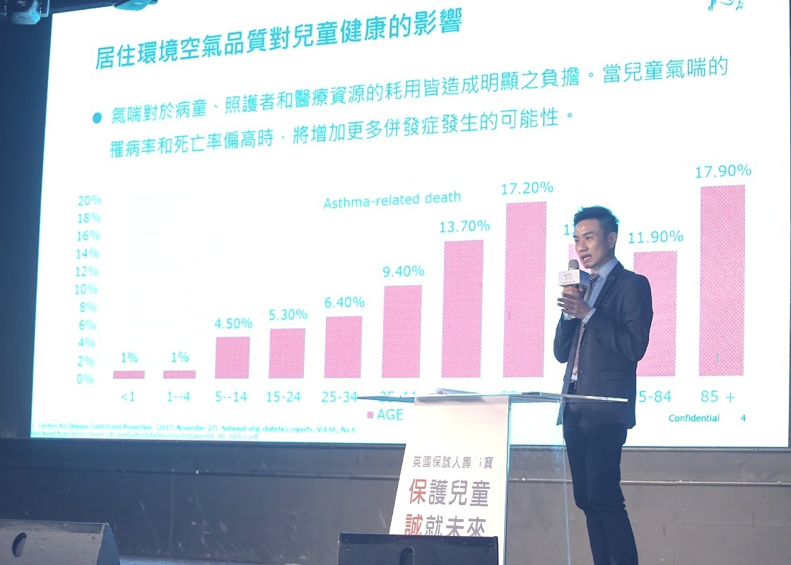

- 200+篇論文
- 4,100+次 Google Scholar 引用
- 37h-index


02 Research
四個研究方向
Precision Health
精準大健康
AI & Prediction
人工智慧與預測模型
Psychometrics
心理計量學
Exercise & Well-being
運動與身心健康
03 Publications
近兩年的著作
- 2026
Machine Learning Approaches to Identify Physical, Psychological, and Social Predictors of Worsening Frailty Transitions Among Community-Dwelling Older Adults: A Longitudinal Study
Geriatrics & Gerontology International 26 (4), e70467
- 2026
Associations between the standard deviation of apparent temperature and sudden cardiac arrest during the Taipei Marathon, 2013–2024
Frontiers in Physiology 17, 1843910
- 2026
Loneliness and sarcopenia in aged care: the mediating role of fatigability
Innovation in Aging 10 (6), igag023
- 2025
Sport fans’ curiosity and impulsive buying: mediation of social media use intensity
Frontiers in Sports and Active Living 7, 1519003
- 2025
Effect of technology-aided training on physiological and psychological sports performance: moderation analysis of sport involvement
PLOS ONE 20 (6), e0325885
- 2025
Sleep quality and possible sarcopenia in community-dwelling older adults: physical and mental fatigability as mediators
BMC Geriatrics 26 (1), 230
04 Career
學術經歷
- 2025 —
教授
國立體育大學競技與教練科學研究所
- 2019 — 2021
主任
Research Center of Big Data, Taipei Medical University
- 2019 — 2020
訪問學者
Center for Artificial Intelligence in Diagnostic Medicine, University of California, Irvine
- 2012 — 2014
主任
Biostatistics and Research Consultation Center, Taipei Medical University
- 2011 — 2021
研究員
Biostatistics Center, Taipei Medical University

2007 年起提供統計諮詢，從研究設計、問卷設計、資料分析到回覆審稿意見。
擔任 Applied Nursing Research、Clinical Nursing Research、Science Progress、Heliyon、Advances in Therapy、BMJ、IJERPH 與體育學報等期刊的審查委員。